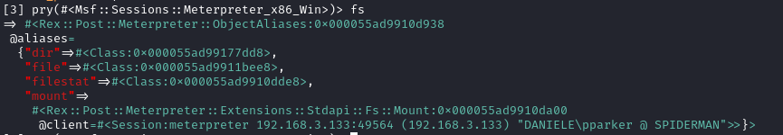
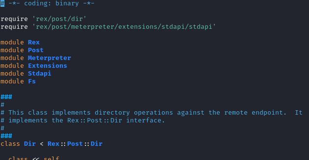
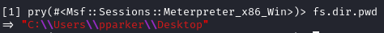
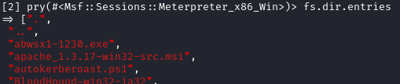
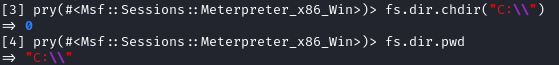
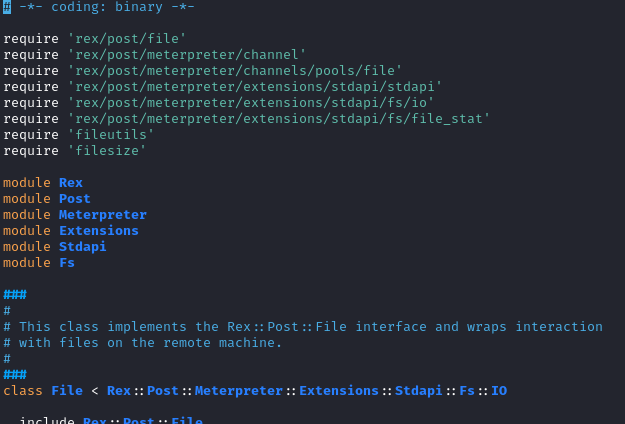
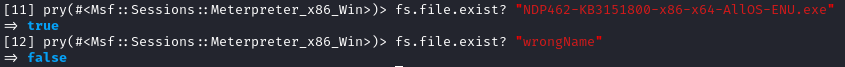

fs
/usr/share/metasploit-framework/lib/rex/post/meterpreter/extensions/stdapi/fs


Formatting on the meterpreter console:
/usr/share/metasploit-framework/lib/rex/post/meterpreter/ui/console/command_dispatcher/stdapi/fs.rb
Dir class (/usr/share/metasploit-framework/lib/rex/post/meterpreter/extensions/stdapi/fs/dir.rb)

methods:
◇ pwd

◇ entries (content folder, also hidden files/folders)

◇ chdir (change directory)

File class (/usr/share/metasploit-framework/lib/rex/post/meterpreter/extensions/stdapi/fs/file.rb)
It contains all the methods useful to interact with the remote machine

◇ search
fs.file.search(fs.dir.pwd,"*.exe")
◇ exist
